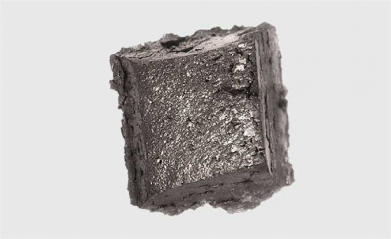

Прометий
Проме́тий (химический символ — Pm, от лат. Promethium) — химический элемент 3-й группы (по устаревшей классификации — побочной подгруппы третьей группы, IIIB) шестого периода периодической системы химических элементов Д. И. Менделеева с атомным номером 61.Относится к семейству лантаноидов.Простое вещество прометий — это радиоактивный редкоземельный металл светло-серого цвета. В природе прометий практически не встречается, поскольку все его изотопы радиоактивны.

Прометий как короткоживущий радиоактивный элемент находится в природе в исчезающе малых количествах (по оценкам, его содержание в земной коре составляет несколько сот граммов) и не мог быть открыт аналитическим способом, несмотря на усилия многих исследователей.В 1924—1926 годах были заявления об открытии элемента 61 флоренций в Италии (из бразильского минерала монацита) и иллиний в Иллинойсском университете в Урбана-Шампейн в США, впоследствии оказавшиеся ошибочными.В 1945 г. американские химики Д. Маринский, Л. Гленденин и Ч. Кориэлл выделили прометий из продуктов деления урана с помощью ионообменных смол.В 1947 г., благодаря исследованиям химических свойств прометия, было доказано существование нового элемента.
Металлический прометий получают металлотермией из PmF3. Выделяется 147Pm из смеси радиоактивных изотопов различных элементов, образующихся в ядерных реакторах.Прометий-147 (период полураспада 2,64 года) испытывает бета-распад в самарий-147 и используется для производства радиоизотопных источников тока, где он применяется в виде оксида Pm2O3, и благодаря тому, что в его излучении при распаде отсутствуют гамма-лучи, он сравнительно безопасен.